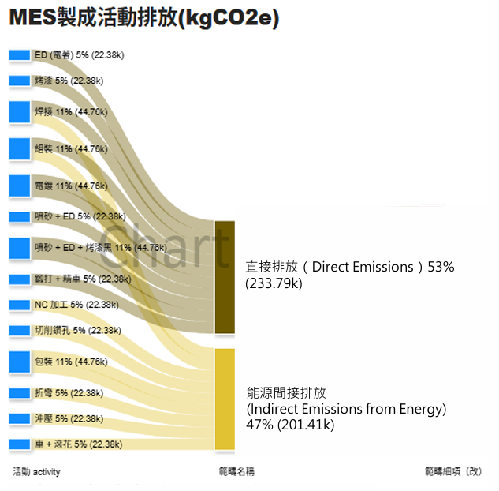
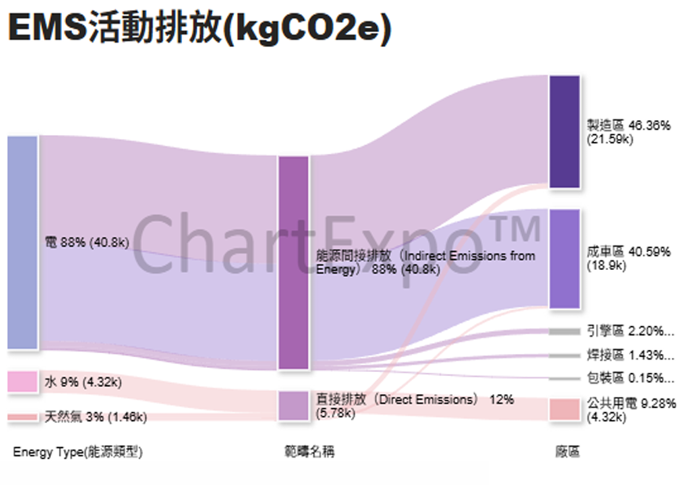

SAP ESG 分析專案
SAP S/4HANA × ABAP × Power BI | 企業永續發展儀表板
專案概述
透過 EMS、MES、各式系統串接資料到 SAP S/4HANA ，並使用 ABAP 提取資料，再使用 Power BI 建立互動式永續發展儀表板。

點擊開啟完整 PDF 報告
點擊上方預覽圖在新分頁開啟完整報告
核心功能
- 碳排放與能源消耗追蹤
- 企業合作
- SAP S/4HANA
- Power BI
- ABAP
技術流程
SAP → ABAP 資料提取 → Power BI 資料模型 → 互動式報表。
學習成長
掌握 ERP 系統整合、ABAP 開發、商業智慧分析，具備企 ESG 報表實作能力。
報表功能截圖

MES製成活動排放

EMS活動排放

ABAP資料提取